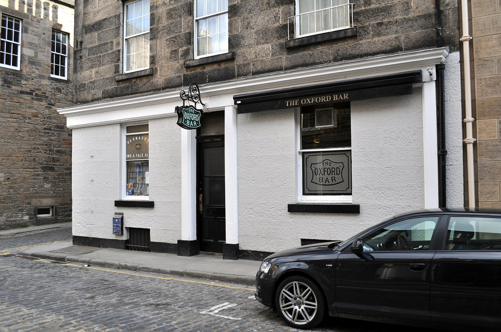

01 · Young Street
The Oxford Bar
A Category B listed building at 8 Young Street, just off Charlotte Square, in a street feued soon after 1779. Historic Environment Scotland says the premises were apparently in pub use by 1811, were a confectioner’s by 1843, and have been a continuous public bar since Andrew Wilson opened one here on 30 October 1893. It is a small, no-frills New Town bar, widely associated with Ian Rankin’s Inspector Rebus novels — Rankin has written about drinking here — not a tourist-show interior.
Tip: From Charlotte Square or George Street, Young Street is a short walk. CAMRA notes children are not admitted. Check the CAMRA listing or the bar itself for current hours; we did not treat a published timetable as locked on 23 November 2026.
Directions: Google Maps · Apple Maps
Photo: Lokal_Profil, CC BY-SA 3.0, via Wikimedia Commons
Sources: Historic Environment Scotland / trove.scot LB30005 · CAMRA: The Oxford Bar
See The Oxford Bar on our Unique Pubs deck →
Find a stay near The Oxford Bar →